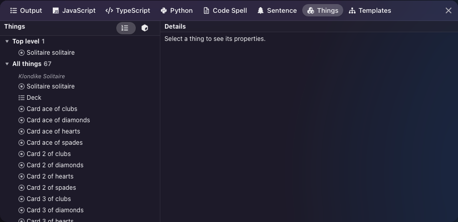
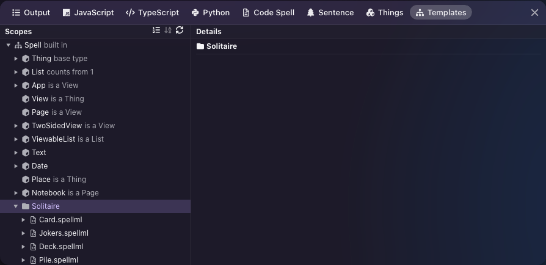
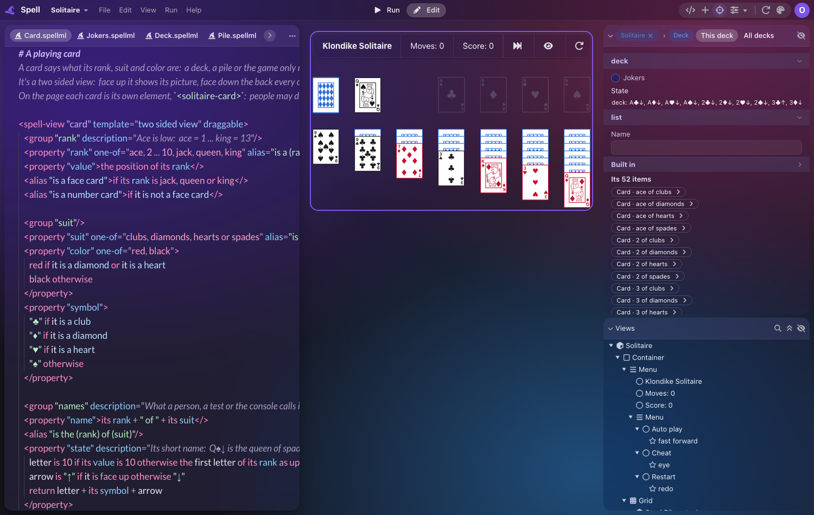
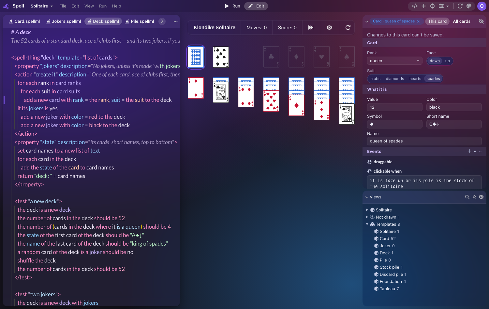
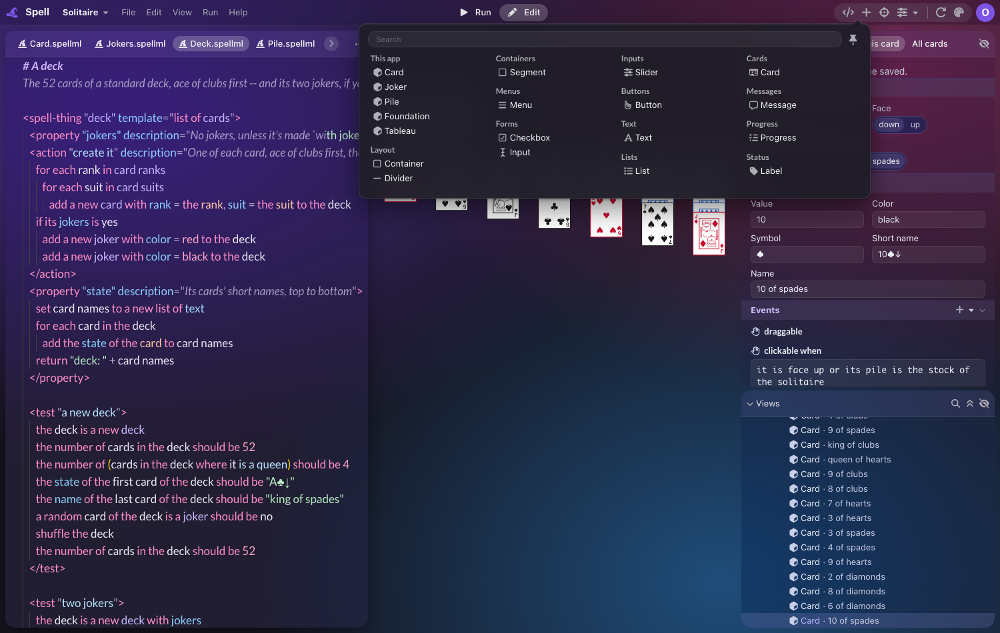

What Things and Templates become
Most of what Things and Templates show is already in the Views tree and the Inspector. Decide what happens to the two tabs, and what a person gets for the little that's left.
editor -- polishing the Spell editor for the public preview, so someone can make an app with
no Spell code.Both are tabs in the Program panel, under the code, which is closed by default. Measured on Solitaire.
- Things: every object the running app has made, 67 here, with live values and actions.
- Templates: every kind of thing the code declares, 9 here, plus the 11 built into Spell.
| Things | Templates |
|---|---|
|
 |
 |
Each row was read from the code. The Deck was also checked in the running editor.
| What the tabs show | Where else it is |
|---|---|
| Every thing the app made | Views tree: what's drawn, then a "Not drawn" group for the rest |
| A thing's live values | Inspector, editable too |
| Running a thing's action | Inspector's Actions band, in the action's own words |
| A list's items, each a link | Inspector: "Its 52 items", in the picture below |
| A declaration's compiled code | Code pane's ⋯, line by line beside the code |
| What a built-in or a name means | Hover and completion, in the code only |
| Things grouped by template, with counts | Nowhere |
| The list of your app's templates | Nowhere without opening code |
| All of Spell's built-ins, browsable, and each one's members | Nowhere in the editor; spell describe in a terminal |
| Writing a template's description in place | Nowhere but the code itself |
Also worth knowing:
- The add menu offers only Spell UI's parts. You can't add a card to Solitaire from it, though "card" is the main thing the app has.
-
The code can't go away whatever you pick. Embedded apps (
<spell-viewer>) and VS Code's Run Project use the same two explorers, and neither has an Inspector or a Views tree. This only changes the editor.

The Things tab lists every object the running app made. Views and the Inspector now show the same objects. Does the editor keep the tab?
One less tab in the Program panel. You'd find a thing in Views, and see it in the Inspector.
- Things grouped by template, unless you pick that in the next question.
- A flat list of things: Views nests them as they're drawn, though its filter finds a name.
Nothing changes, and the panel keeps a tab that repeats the side bar.
Without opening the code, a person can't see what kinds of thing their app has, or add one. What should they get? Pick any.
A short list, each with how many exist. A click selects them all, on "All cards". This is the "what's in my program" view, with no new panel. Small to build.
Drawn over the real editor: at the right, under Views. The rows don't work yet.

Your own views come first in the add menu, to click or drag in, like any other part. It's the bigger gain for making an app with no code, but it's the riskier build.
Drawn over the real editor. The rows don't work yet.

Not tried yet: what a dropped template should write. A plain view is simple, but a card needs a rank and a suit, and it may need to join a list. I'd build the simple case first, and tell you what the rest needs.
Fewest lines, and nothing new to learn. Your own templates stay visible only in the code, or by selecting one on screen.
The Templates tab is the only place in the editor to browse Spell's built-ins and their members. Someone with no code doesn't need that: the add menu answers "what can I use?" for them. Someone writing code might. What happens to the tab?
It stays in the Program panel, as it is, until a real reference replaces it. Nothing's lost, and people with no code never see it. It does leave the old tab in place.
The panel gets simpler. Writers rely on hover and completion, and on spell describe in
a terminal. Browsing built-ins and editing a description in place both go.
A searchable "what can I use?" card or page, for people and for writers, replacing the tab. It's the most work, and I found nothing a no-code person needs from it yet.